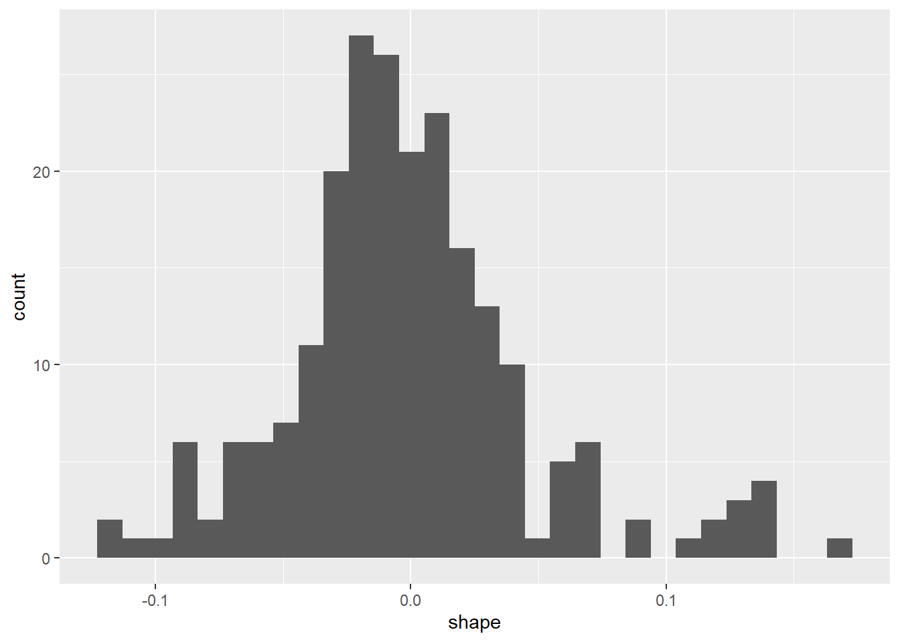
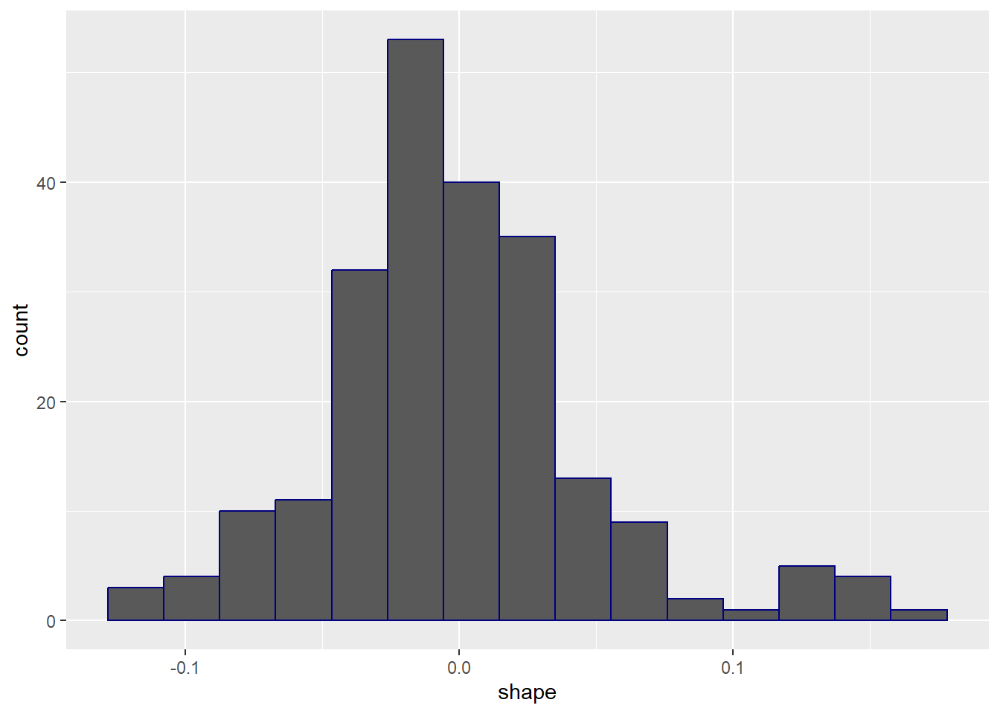
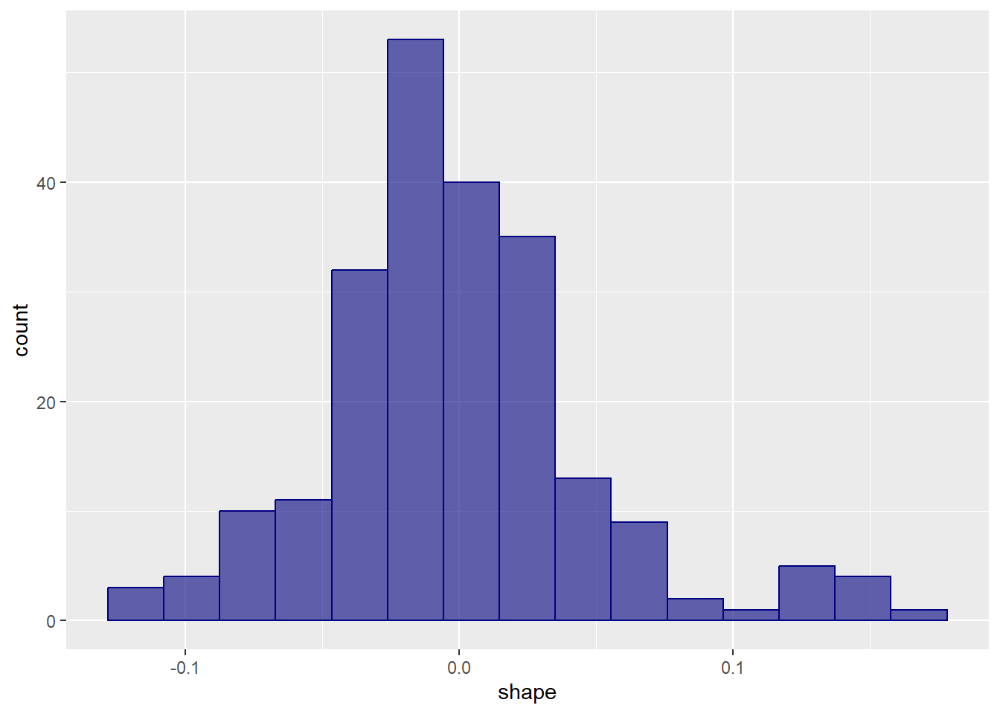
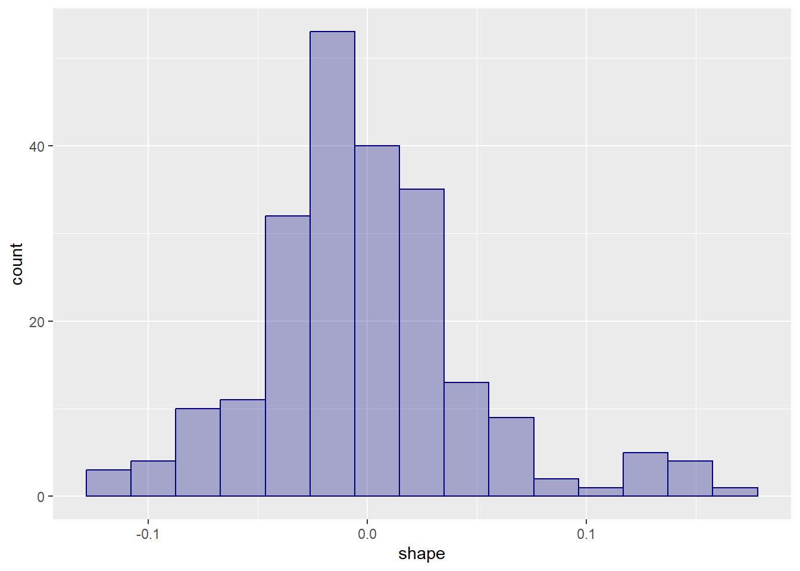
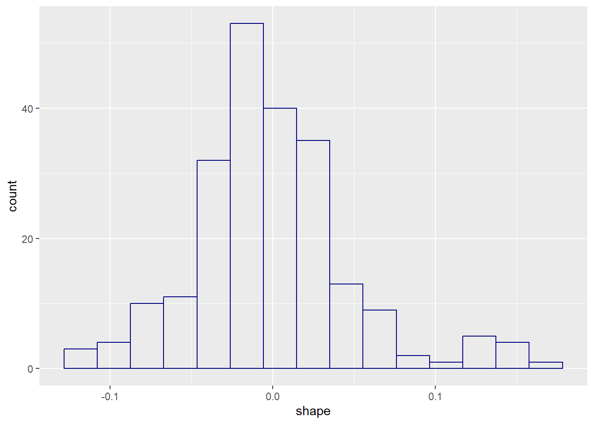
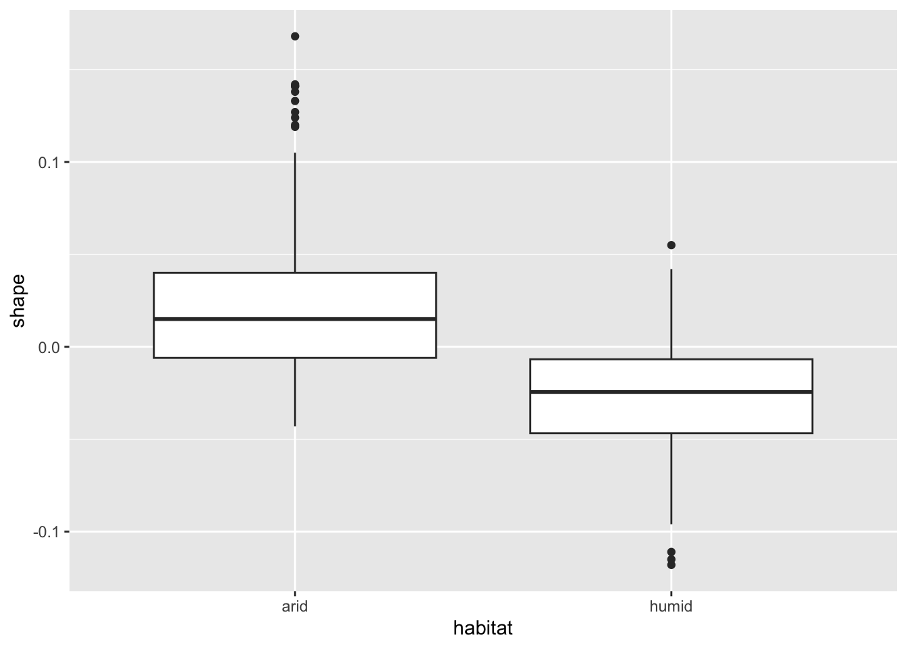
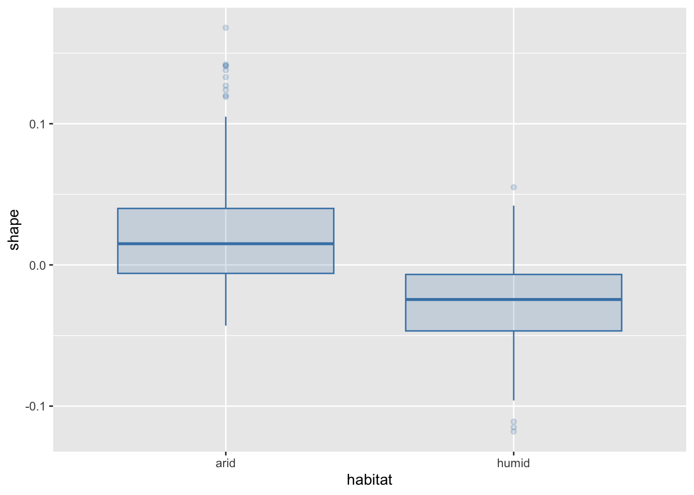
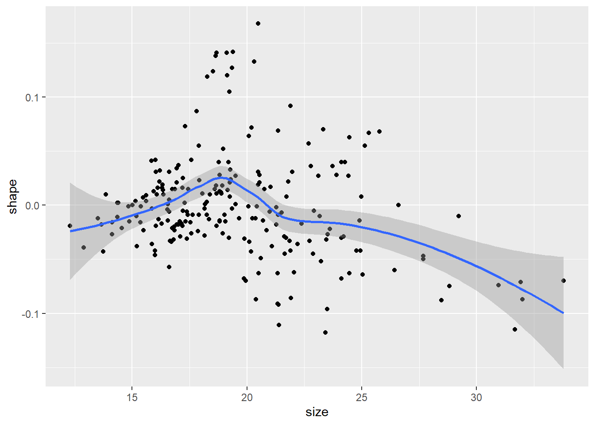
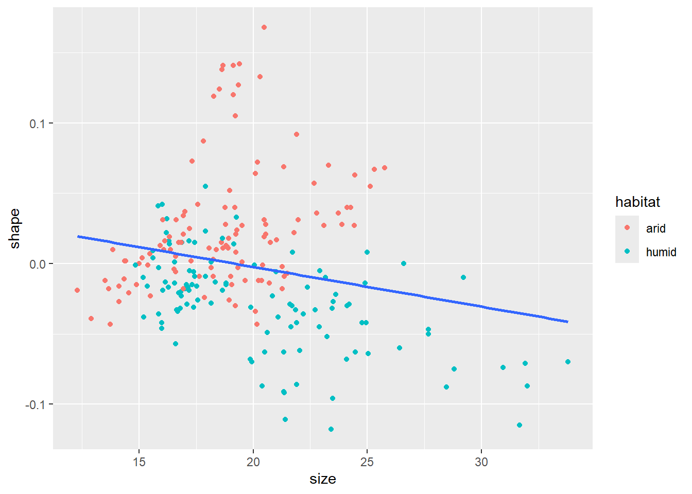

In science, we want clear and informative plots. Each figure should make it obvious what data you are plotting, what the axes, colors, shapes, and size differences represent, and the overall message the figure is conveying. When writing a scientific paper or report, remember that your future readers are busy people. They often do not have the time to delve into the subtleties of overly refined verbal arguments. Instead, they will most often look for the figures to learn what your work is about. You will want to create figures which makes this possible for them to do.
Here we will learn how to create accessible, publication-quality scientific graphs in a simple way. We do this using the R package ggplot2 which is a standard part of the tidyverse. The ggplot2 package follows a very special philosophy for creating figures that was originally proposed by Leland Wilkinson (2006). The essence of this view is that, just like the grammar of sentences, graphs have fixed “grammatical” components whose specification defines the plot. The grand idea is that the data ought not be changed in order to display it in different formats. For instance, the same data should be possible to represent either as a box plot, or as a histogram, without changing their format.
This last claim needs to be qualified somewhat. It is more accurate to say that one should not need to change the data as long as they are in tidy format. As a reminder, “tidy data” means that every variable is in its own column, and every observation is in its own row (Section 6.4). In case the data are not tidy, one should first wrangle them into such form, for example by using pivot_longer. While this step is not always required (especially for simpler graphs), it can be very useful to tidy the data before analyzing and plotting them when working with larger, more complex datasets.
7.2 Basic ggplot2 usage
To see how ggplot2 works, let us load tidyverse, and then use the Galápagos land snail dataset to create some figures. As a reminder, here is what the data look like:
Let us, as a first step, create a plot where shell shape (y-axis) is plotted against shell size (x-axis), with the points referring to different habitats shown in different colors:
ggplot(data = snails,mapping =aes(x = size, y = shape, color = habitat)) +geom_point()
The ggplot function takes two inputs: the data (in this case, the snails table) and the aesthetic mappings (mapping). On top of this, we add on the geometry of how to display the data—in this case, with geom_point().
The aesthetic mappings are always defined via the aes helper function. What are these “aesthetic mappings”? The important thing to remember is that the aesthetic mappings are all those aspects of the figure that are governed by the data. For instance, if you wanted to set the color of all points to blue, this would not be an aesthetic mapping, because it applies regardless of what the data are (in case you want to do this, you would have to specify geom_point(color = "blue") in the last line).
The geometry of your plot governs the overall visual arrangement of your data (points, lines, histograms, etc). There are many different geom_s; we will learn about some here, but when in doubt, Google and a ggplot2 cheat sheet are your best friends.
The above program is often written by piping the data into the ggplot function. Then, since the mapping argument is always given via the aes function, one usually omits naming this argument:
snails |>ggplot(aes(x = size, y = shape, color = habitat)) +geom_point()
This is the most common form we will write a function call to ggplot.
Notice that the different “grammatical” components are added to the plot, using the + symbol for addition. A common source of error is to accidentally keep using the pipe operator |> even within a plot. The rule of thumb is that after invoking ggplot, one must use + to compose the various graph elements, but outside of that, the usual |> is used for function composition. If one uses |> instead of + within a plot, R will give back an error message instead of graphics:
snails |>ggplot(aes(x = size, y = shape, color = habitat)) |>geom_point()
Error in `geom_point()`:
! `mapping` must be created by `aes()`.
ℹ Did you use `%>%` or `|>` instead of `+`?
Just be sure to remember this so you can correct the mistake, should you accidentally run up against it.
7.3 Some common geometries
7.3.1 Scatter plots with geom_point
The plot above, created using geom_point, is called a scatter plot: each row in the data is represented by a point whose x- and y-coordinates come from different columns in the data (in this case, size and shape). The scatter plot above immediately revealed some interesting facts about the data. For example, the largest shell sizes are found in the humid habitats, whereas snails with the largest shell shape parameters (indicating long and slender shells) are found only in the arid regions. This is exactly the kind of information that would have been difficult to get just from the raw data in its tabular form, but is immediately seen from an appropriate graph.
7.3.2 Distribution of a variable
The distribution of a qualitative variable should be visualized using a bar plot. If the variable follows the ordinal scale, the categories on the x-axis should follow the same order. If the variable follows the nominal scale we do not have to follow any specific order of the categories, but it is usually nice to order them either alphabetically or in descending order based on the (relative) frequency of the category.
When visualizing the distribution, it is customary to use the relative frequency (%) of each category instead of their absolute frequency (count). This can be done directly in the ggplot-process without the need for additional data processing prior to the visualization. In this case, the default calculation done is counting the number of occurrences of each category and the height (y) of the bars being defined by the count. The after_stat() function allows for calculations after the counting has been completed. for example, count / sum(count) would calculate the relative frequency of each category compared to the total number of observations. If we multiply this value by 100, we can show the percent of observations of each category.
snails |># The after_stat below changes the calculation of the y-axis to# (count / sum(count)) * 100, instead of the default, which is countggplot(aes(x = species, y =after_stat(count /sum(count)) *100)) +geom_bar(fill ="steelblue") +# Fix the y-axis to display percentages:scale_y_continuous(name ="percent")
A quantitative variable can be visualized in two different ways depending on the variable type. A discrete variable, which per definition only can assume whole (or a set number of decimals) numbers, can be visualized using a bar plot because it usually contains a finite number of unique values and at the same time cannot have values in between.
A continuous variable can be measured with infinite amount of decimal places which means that there exist an infinite amount of unique values. Instead of having an infinite number of bars in a bar plot, we group adjacent values together into intervals and create a histogram. Another way to visualize a continuous variable is by using a box(-and-whisker) plot.
We do not differentiate between a variable following an interval or a ratio scale when visualizing a distribution, but it is something to take into account when interpreting the plots. For example, if a variable follows the interval scale, we could not state that values in one area of the figure are “twice as large” as values in another area.
7.3.2.1 Histograms with geom_histogram
To look at a different kind of geometry, let us create a histogram of the shell shape measurements. This is done using geom_histogram:
snails |>ggplot(aes(x = shape)) +geom_histogram()

A histogram divides up the x-axis into equally-sized segments, called bins. We then count how many observations fall within the limits of each bin, and draw the bins as tall along the y-axis as that count. So bins with many data points are tall, and bins with only few observations are short.
The default setting for geom_histogram is to classify the data into 30 equally-sized bins, but that might not always be the best choice. In the above histogram, for example, there are some erratic-looking jumps that have more to do with having too few observations per bin than with the actual data themselves. To change the number of bins, we have two options. We can use the bins argument to geom_histogram to explicitly specify how many bins we want in the plot:
What do we do to make the plot prettier—e.g., to change the color of the bins to something else? One can give the color argument to geom_histogram:
snails |>ggplot(aes(x = shape)) +geom_histogram(bins =15, color ="navy")

And now the plot is navy blue - at least in outline. To change the color of the fill, one must also change the fill argument:
snails |>ggplot(aes(x = shape)) +geom_histogram(bins =15, color ="navy", fill ="navy")
One can make the fill color partially or completely transparent, too. The level of transparency is controlled by the alpha argument. It is 0 for fully transparent fills and 1 for fully opaque ones. The default value is 1, but one can reduce this for more transparency:
snails |>ggplot(aes(x = shape)) +geom_histogram(bins =15, color ="navy", fill ="navy", alpha =0.6)

Reducing transparency further, we get:
snails |>ggplot(aes(x = shape)) +geom_histogram(bins =15, color ="navy", fill ="navy", alpha =0.3)

And, for full transparency:
snails |>ggplot(aes(x = shape)) +geom_histogram(bins =15, color ="navy", fill ="navy", alpha =0)

The arguments color, fill, and alpha can also appear inside the aesthetic mappings. Why didn’t they here? Because, as stated, aesthetic mappings are those aspects of a plot that are governed by the data. But here, the color, fill, and transparency levels do not depend on the data: they have been chosen independently, to be constant values.
Incidentally, there are many built-in color names in R. One can see the full list by invoking colors() in the R console - there are hundreds of them. To see what those colors actually look like, this website has a good overview.
7.3.2.2 Box plots with geom_boxplot
A box plot (also known as a “box-and-whisker plot”) provides a quick overview of how data are distributed: a box contains the middle 50% of all the data, whiskers at the ends of the boxes show the top and bottom 25%, and a thick line going through the box separates the top half from the bottom half of the data (the median). Additionally, points classified as outliers are shown explicitly. More detailed information on box plots will come in Section 6.3.1.3.
One can create box plots with geom_boxplot. Let us create one box plot of the distribution of shell shapes for each habitat (arid and humid). Putting habitat along the x-axis and shell shape along the y-axis:
snails |>ggplot(aes(x = habitat, y = shape)) +geom_boxplot()

As seen, the shell shape parameters in arid habitats tend to be larger than in humid ones.
Although this is sufficient, one should feel free to make the plots prettier. For instance, one could use colors and fills, like before:
snails |>ggplot(aes(x = habitat, y = shape)) +geom_boxplot(color ="steelblue", fill ="steelblue", alpha =0.2)

7.3.3 Smoothing lines with geom_smooth
Let us look at the following program and its output:
snails |>ggplot(aes(x = size, y = shape)) +geom_point() +geom_smooth()

We see two new things here. First, there are two geometries instead of one: the first generates a scatter plot with geom_point, but there is an additional geometry as well. This is perfectly legal; one can add as many as one wants. The aesthetic mappings will then apply to every geometry. Second, there is a function called geom_smooth. This generates a wiggly blue line which attempts to estimate the general trend of how the data change. There is a grey shaded region surrounding the line, which estimates the level of uncertainty in the blue line’s position.
Most often, we want a simple linear function to estimate the overall trend in the data. This can be achieved by adding method = lm as an argument to geom_smooth:
(Here lm means “linear model”. It is a function in R which we will discuss in detail in Chapter 17 and subsequent chapters.) The shaded region can also be turned off using the se = FALSE argument:
snails |>ggplot(aes(x = size, y = shape)) +geom_point() +geom_smooth(method = lm, se =FALSE)
As mentioned above, when having multiple geometries, the aesthetic mappings apply to all of them by default. This means that if, for example, we want to distinguish the habitat of the snails using colors (like we did before), then we automatically split the smoothing line into two colored lines as well:
snails |>ggplot(aes(x = size, y = shape, color = habitat)) +geom_point() +geom_smooth(method = lm, se =FALSE)
This is a very handy feature. Sometimes however, we want to color the points by habitat but still retain a single global smoothing line for all points taken together. How can one do that? It turns out that in addition to the global aesthetic mappings (that are inside the ggplot function), one can also define local ones inside any geom_ function. So one solution could be to only define the color aesthetic inside geom_point:
snails |>ggplot(aes(x = size, y = shape)) +geom_point(aes(color = habitat)) +geom_smooth(method = lm, se =FALSE)

One final comment: the default color for the smoothing line is blue, but this can be changed within geom_smooth. To set the color to black, for instance:
snails |>ggplot(aes(x = size, y = shape)) +geom_point(aes(color = habitat)) +geom_smooth(method = lm, se =FALSE, color ="black")
Since the black color is a constant property of the geometry, it was not defined as an aesthetic mapping.
7.4 Saving plots
To save the most recently created ggplot figure, simply type
Here filename is the name (with path and extension) of the file you want to save the figure into. The extension is important: by having specified .pdf, the system automatically saves the figure in PDF format. To use, say, PNG instead:
PDF is a vectorized file format: the file contains the instructions for generating the plot elements instead of a pixel representation of the image. Consequently, PDF figures are arbitrarily scalable, and are therefore the preferred way of saving and handling scientific graphs.
The width and height parameters specify, in inches, the dimensions of the saved plot. Note that this also scales some other plot elements, such as the size of the axis labels and plot legends. This means you can play with the width and height parameters to save the figure at a size where the labels are clearly visible without being too large.
In case you would like to save a figure that is not the last one that was generated, you can specify the plot argument to ggsave(). to do so, first you should assign a plot to a variable. For example:
p <- snails |># Assign the ggplot object to the variable pggplot(aes(x = size, y = shape)) +geom_point(aes(color = habitat)) +geom_smooth(method = lm, se =FALSE, color ="black")
Fauchald et al. (2017) tracked the population size of various herds of caribou in North America over time, and correlated population cycling with the amount of vegetation and sea-ice cover. The part of their data that we will use consists of two files: pop_size.tsv (data on herd population sizes), and sea_ice.tsv (on sea levels of sea ice cover per year and month).
The file sea_ice.tsv is in human-readable, wide format. Note however that the rule “each set of observations is stored in its own row” is violated. We would like to organize the data in a tidy tibble with four columns: Herd, Year, Month, and Cover. To this end, apply the function pivot_longer to columns 3-14 in the tibble, gathering the names of the months in the new column Month and the values in the new column Cover.
Use pop_size.tsv to make a plot of herd sizes through time. Let the x-axis be Year, the y-axis be population size. Show different herds in different colors. For the geometry, use points.
The previous plot is actually not that easy to see and interpret. To make it better, add a line geometry as well, which will connect the points with lines.
Make a histogram out of all population sizes in the data.
Make the same histogram, but break it down by herd, using a different color and fill for each herd.
Instead of a histogram, make a density plot with the same data and display (look up geom_density if needed).
Make box plots of the population size of each herd. Along the x-axis, each herd should be separately displayed; the y-axis should be population size. The box plots should summarize population sizes across all years.
Let us go back to sea_ice.tsv. Make the following plot. Along the x-axis, have Year. Along the y-axis, Month. Then, for each month-year pair, color the given part of the plot darker for lower ice cover and lighter for more. (Hint: look up geom_tile if needed.) Finally, make sure to do all this only for the herd with the label WAH (filter the data before plotting).
The following plotting exercises use the Galápagos land snail data (Section 4.2.2).
Create a density plot (geom_density) with shell size along the x-axis and the corresponding density of individuals along the y-axis. How much overlap is there between the sizes of the different species?
Repeat the above exercise, but use the standardized size instead of the raw measurements. As a reminder, this means subtracting out the minimum from each entry, and dividing the results by the difference of the maximum and minimum entries (Section 5.1.3). Make sure to have clean, descriptive axis labels on the plot. What is the difference between this figure and the one obtained in the previous exercise using the non-standardized size values?
Now do exercises 9-10 for shell shape instead of size.
Create a scatter plot with size along the x-axis and shape along the y-axis. Each individual should be a point on the graph.
Repeat the same, but use the standardized size and shape measurements along the axes. Compare the figures. In what do they differ?
Create the same scatter plot with standardized size along the x-axis and shape along the y-axis, but with the points colored based on habitat. That is, individuals found in humid environments should all have one color, and those found in arid regions should have another. Do you see any patterns, in terms of whether certain shell sizes or shapes are more associated with a given type of habitat?
Modify the previous plot by coloring the points based on species instead of habitat. How much trait overlap is there between individuals belonging to different species? How do you interpret this result, especially in light of what you previously saw in exercises 9-11?
Fauchald, Per, Taejin Park, Hans Tømmervik, Ranga Myneni, and Vera Helene Hausner. 2017. “Arctic greening from warming promotes declines in caribou populations.”Science Advances 3 (4): e1601365. https://doi.org/10.1126/sciadv.1601365.
Wilkinson, Leland. 2006. The Grammar of Graphics. Secaucus, NJ, USA: Springer Science & Business Media.